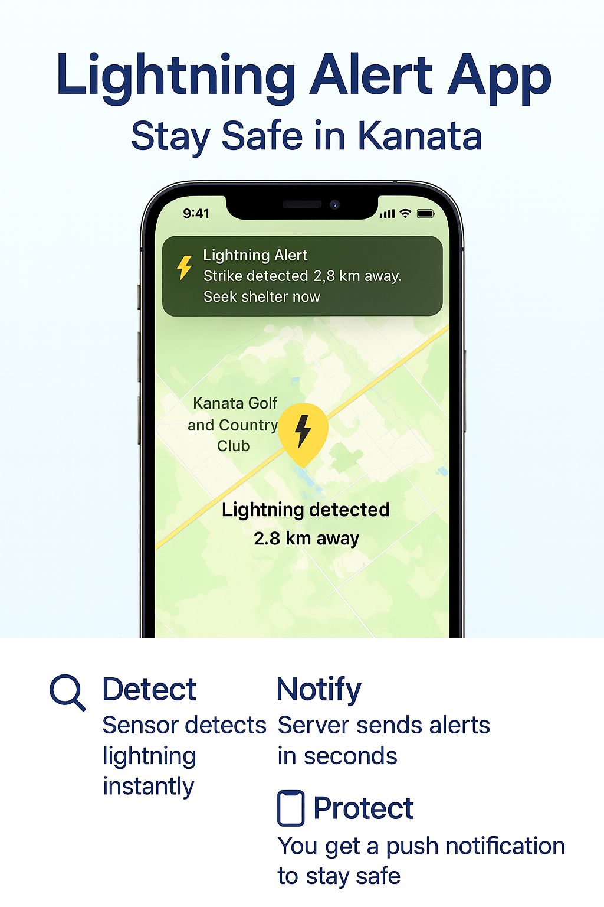
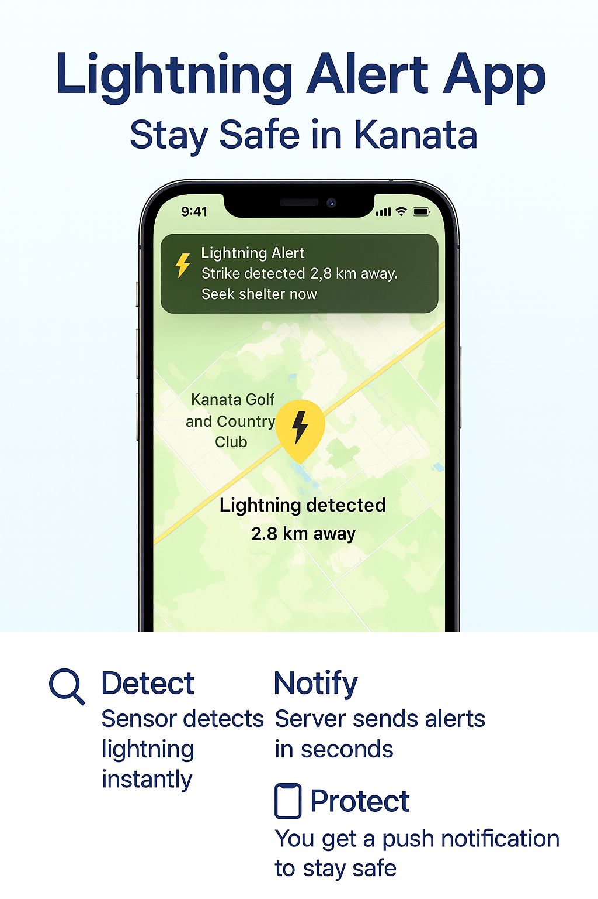

App Preview
See how our Lightning Alert App works on iPhone.

我们是来自 Kanata 的 Kevin 和 Eric。我们的项目要构建一个可持续的、社区共享的雷电提醒网络，提供秒级、本地化的信息与公众科普，作为 WeatherCAN / WeatherBug 的有益补充。
目前的雷电解决方案, 要么是全国性的网络, 要么是针对单个家庭。 还没有专门为社区共享而设计的可持续系统。我们的项目正是填补了这个空白。
| 类型 | 主要特点 | 局限性 |
|---|---|---|
|
国家/全球网络 (WeatherCAN, Vaisala) |
覆盖范围广, 官方数据, 科研级精度 | 延迟30秒-2分钟, 非超本地化, 不面向社区 |
|
个人设备 (AcuRite, Tempest) |
单户可负担, 探测范围几十公里 | 数据孤立, 若每家都买成本高, 无共享机制 |
| 我们的社区共享系统 | 秒级提醒, 学校/俱乐部/家庭共享, 可持续且经济高效 | 新概念, 需要社区协作 |
See how our Lightning Alert App works on iPhone.

很多人注意到，加拿大官方的 WeatherCAN 雷电地图和商业应用 WeatherBug 在显示上差别很大。第一眼看上去，这两个地图给人的精度印象完全不同。
| 对比点 | WeatherCAN（官方） | WeatherBug（商业应用） |
|---|---|---|
| 地图缩放 | 缩放有限，主要是城市级别 | 可深度缩放，视觉上可到街道级别 |
| 用户印象 | 看起来比较粗糙，更多是区域模式 | 看起来非常精准，似乎能精确到每条街甚至房子 |
| 实际探测原理 | 基于加拿大官方雷电探测网络（ECCC） | 基于 Earth Networks 的 ENTLN 传感器网络 |
| 真实精度 | 取决于探测器密度，通常在几百米到几公里之间 | 同样取决于探测器覆盖，不能保证街道级别 |
关键点：这两个地图的区别主要是视觉上的。WeatherCAN 展示的是城市级别的粗粒度，而 WeatherBug 看起来更细致、更本地化。但实际上，它们都依赖探测器的密度。在探测器稀疏的地方，两者都无法保证真正的街道级精度。
WeatherCAN 提供可靠的全国雷电地图。我们的项目在此基础上, 提供更本地化、实时化、社区共享的方案。
| Feature / 特点 | WeatherCAN | Our Project |
|---|---|---|
| Update Frequency / 更新频率 | Every 1 minute | Seconds-level updates |
| Coverage / 覆盖范围 | Nationwide (Canada) | Local (1-40 km around sensors) |
| Detection Type / 检测类型 | Cloud-to-ground lightning | Same, but with community triangulation for location |
| Access / 使用方式 | WeatherCAN App | Free website + iOS App for our community |
| Purpose / 目标 | National awareness | Community notification/awareness & education |
两个系统都很有价值。WeatherCAN 提供全国视角, 而我们的项目则专注于卡纳塔湖社区的本地化、实时安全。
| 项目 | 费用 |
|---|---|
| 雷电传感器 | $62.70 |
| RTL-SDR USB 接收器 (433 MHz) | $65.95 |
| Raspberry Pi 或小型电脑 | $143.00 |
| Apple 开发者账号 (1 年) | $99.00 |
| MQTT 云服务器 | $10/Month |
| 网站托管 (GitHub Pages / Netlify) | Free |
| 总初始成本 | ≈ $370 |
持续成本:大约 $10/月。
购买硬件(传感器、SDR、树莓派), 测试信号解码, 验证探测准确性。
搭建云服务器, 安装 MQTT broker, 连接树莓派, 建立基础数据记录。
上线项目网站, 展示使命、预算、STEM 知识, 并开放捐赠。
申请 Apple 开发者账号, 配置 Xcode, 开发带通知功能的 iOS 应用原型。
增加地图可视化, 提升服务器安全, 优化基于距离的提醒, 收集用户反馈。
发布应用到 App Store, 组织社区科普讲座, 帮助邻居安装和使用应用。
在 Kanata 增加更多传感器, 招募学生团队, 探索 Android 版本。
We'd love to hear from you! Whether you are from ECCC, a teacher, a parent, or a community member, feel free to reach out.
We are based in Kanata Lakes, Ottawa, and happy to collaborate with organizations that care about community safety and weather awareness.
Lightning is a serious safety concern in Canada. According to Environment and Climate Change Canada (ECCC) and scientific studies, lightning strikes cause multiple deaths and hundreds of injuries every year.
| Source | Deaths per year | Injuries per year |
|---|---|---|
| Official conservative estimate (ECCC) | 2-3 | ~180 |
| Scientific research (Mills et al., 2006) | 9-10 | 92-164 |
| ECCC upper estimate | ≤10 | ≤164 |
Most lightning-related deaths and injuries in Canada occur during the summer months (June-August), especially in Ontario, Quebec, Alberta, Saskatchewan, and Manitoba.
This shows why community-level, second-fast lightning alerts are important: even in a developed country like Canada, lightning still causes preventable deaths and injuries every year.

World map showing frequency of lightning strikes, in flashes per square kilometer (km²) per year (equal-area projection). Lightning strikes most frequently in the Democratic Republic of the Congo. Data combined from the Optical Transient Detector (1995-2003) and Lightning Imaging Sensor (1998-2003).
The highest lightning densities are found in tropical regions. Lake Maracaibo in Venezuela holds the world record with ~250 lightning strikes per km² per year, followed by parts of DR Congo (~205/km²) and Singapore, the country with the highest overall lightning density.
According to the World Meteorological Organization (WMO), lightning kills about 24,000-30,000 people every year worldwide, and injures 240,000-300,000 more. Many cases in rural areas are never reported, so the true numbers may be higher.
感谢支持我们的组织、学校和个人, 他们相信并愿意共同建设一个更安全的社区共享雷电告警网络。

以及社区的个人捐赠者
感谢慷慨支持我们项目的个人和家庭。
我一直对气象和极端天气充满热情。几年前，我就在家里安装了一个个人气象站，坚持观察和测量本地的天气情况。随着时间推移，我更加明确了自己未来要从事大气与环境科学方面的学习和职业方向。
为了向专业人士学习，我开始在 LinkedIn 上关注加拿大环境与气候变化部 (ECCC) 和其他相关机构，阅读他们的文章和更新。有一次，我看到 ECCC 发布消息，说 WeatherCAN 新增了一个功能：Canada’s Lightning Map（加拿大雷电地图）。我非常兴奋，第一时间试用了，并在 LinkedIn 上发表了反馈。
当我把 WeatherCAN 的新功能告诉家人的时候，我那个总爱追问问题的弟弟立刻插话：‘这个雷电地图和我们家的气象站雷电告警有什么区别呢？既然 WeatherCAN 已经有了这个功能，是不是大家以后都不用再买我们这样的传感器了？’ 他一连串的问题让我突然停下来，好好想了想。
后来，在高尔夫球场训练时，我问教练俱乐部有没有雷电告警设备。教练说没有，但他个人一直在用 WeatherBug，还给我看了它的雷电地图界面。我的第一反应是：这个界面好精细啊，居然能直接看到球场和街道。回家后我开始查资料，发现虽然 WeatherBug 的地图看起来很细致，但真正的探测精度仍然取决于传感器的分布密度。
这次经历启发我去研究 ECCC 的雷电探测网络的功能和特点，也让我想到一个新点子：除了国家级或商业系统，我们也可以在社区内部做一个共享的、本地化的、实时雷电提醒网络。
通过建设一个社区共享的雷电检测网络，我希望不仅能在极端天气中提升安全性，还能增强居民的防雷意识和科普教育，让大家更好地保护自己。
Kevin